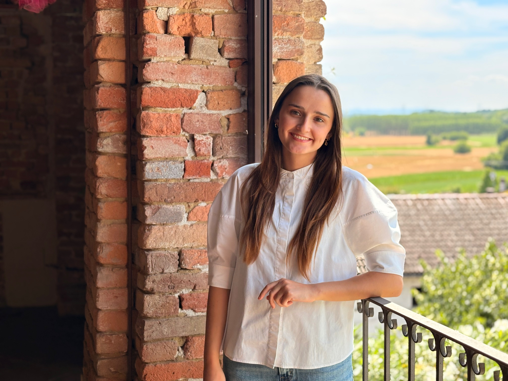
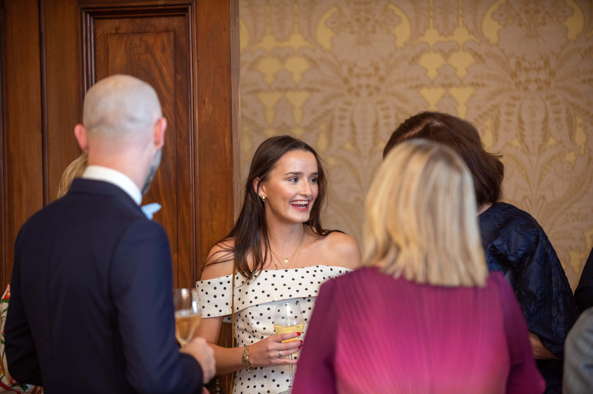

What makes me, me
The most interesting professionals are curious humans first. Here is a glimpse into the things that fill my life beyond work.
Music

Travel
Sport
📷Family
Family & Friends
A behavioural science graduate with a multicultural upbringing and curiosity about what makes people move.
Increasingly focused on how AI tools can develop and enhance the way organisations and people work.
Discover more

I grew up across London, Basel, and Madrid, three cities, three cultures, one through-line: a fascination with people. Why we behave the way we do. What drives us. What holds us back.
That curiosity led me to study Behavioural and Social Sciences at IE University, and it shapes everything I do. I am increasingly drawn to the space where human behaviour meets AI, specifically how organisations can implement AI tools in ways that genuinely change how people work, not just in theory but in practice.
Outside of work you will find me playing saxophone in a big band, exploring a new city, or overcaffeinating in a good Madrid cafe. I believe the best professionals are curious humans first.
I hold British and Irish nationality and have called three very different places home. Each one shaped how I see people, work, and the world.
My British and Irish heritage has given me a unique perspective on culture and identity.
My childhood and teenage years were spent in Basel, an international city where I attended the International School of Basel.
Madrid is where I graduated, grew, and am building my career. IE University brought me here and the city has kept me. I love the culture and people.
Worked directly with the leadership team of Sandoz's Global Competency Center in Madrid. Co-designed and facilitated a GenAI training programme in Microsoft Copilot 365 reaching 250+ employees across five countries. Led primary research for the office redesign transformation project, turning data into concrete recommendations for senior leadership.
Designed and executed primary research into Gen Z consumer behaviour. Conducted eight qualitative interviews, applied thematic coding using AtlasAI, and delivered a structured insight presentation with concrete marketing recommendations for the Beats team.
Worked within the Health Economics and Outcomes Research team in Dublin, translating raw clinical trial data into analytical summaries and presentations used in cross-functional and external stakeholder contexts.
Joining Cataforma in Prague for an intensive consulting training programme focused on AI applications in management consulting. Alongside receiving hands-on training from experienced practitioners, I will be building personalised AI agents to develop and enhance Cataforma's startup operations, then teaching the team to build and iterate on their own tools going forward.
Qualitative dissertation exploring how Generative AI is reshaping workplace behaviour. Based on ten expert interviews, thematically coded and synthesised into a structured analytical argument.
Co-designed and delivered a GenAI training programme across five global offices, reaching 250+ employees. Handled content design, coordination and facilitation end to end.
End-to-end primary research for Beats by Dre. Eight qualitative interviews, thematic analysis, and a final insight deck with three strategic recommendations.
Presented the graduation speech at the International School of Basel, sharing insights and experiences from my academic journey and my graduating class of 2022.
The most interesting professionals are curious humans first. Here is a glimpse into the things that fill my life beyond work.
Whether it is a role, a project, or just a coffee conversation, I would love to hear from you.